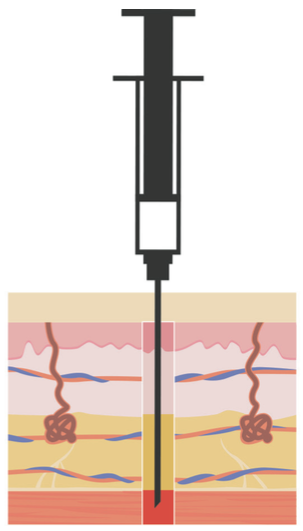
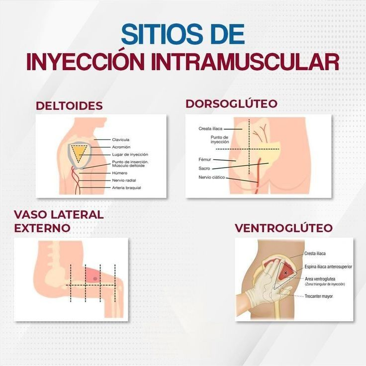

La inyección intramuscular es la administración de medicamentos directamente dentro de un músculo para una absorción rápida y eficaz. Permite aplicar fármacos que no pueden darse vía oral o que requieren acción veloz.

Conceptos básicos

Técnica de aplicación
Los sitios anatómicos deben seleccionarse cuidadosamente para las inyecciones intramusculares e incluyen el ventroglúteo, vasto lateral y deltoides. El sitio vasto lateral es preferible para los bebés porque ese músculo está más desarrollado. El sitio ventroglúteo generalmente se recomienda para la administración de medicamentos IM en adultos, pero las vacunas IM pueden administrarse en el sitio deltoides.
Vasto lateral
Ventroglúteo
Deltoides
Dorsoglúteo